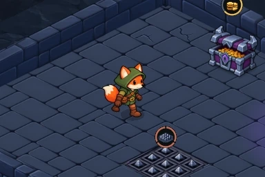

Vulpin — premier test de marche
Une direction, huit images. La vue agrandie aide à repérer les changements de dessin ; la petite vue montre la lisibilité indicative dans le jeu.
1 / 8
Prototype : l’alternance des jambes reste irrégulière et le dessin du torse varie encore entre certaines poses, malgré deux retouches. Le guide géométrique n’est pas suivi exactement par la peinture. Cette boucle n’est pas prête pour l’intégration. La cadence de revue reste indépendante du déplacement actuel des héros.
Lecture native dans le donjon
Huit captures issues de la scène Godot isolée, assemblées en boucle sur place. Le moteur a aussi exécuté deux cycles avec AnimatedSprite2D et vérifié la pause. Il s’agit d’une validation du chargement et de la lecture, pas d’une validation artistique ou d’un test de glissement des pieds.

Boucle transparente · Ralenti · Validation native
Le Vulpin reste sans arme. Les poses de dégâts, crochetage et mort validées sont conservées pour les prochains cycles.
Atlas de huit images · Planche ImageGen retenue pour ce test · Prompt · Guide géométrique · Préparation et limites